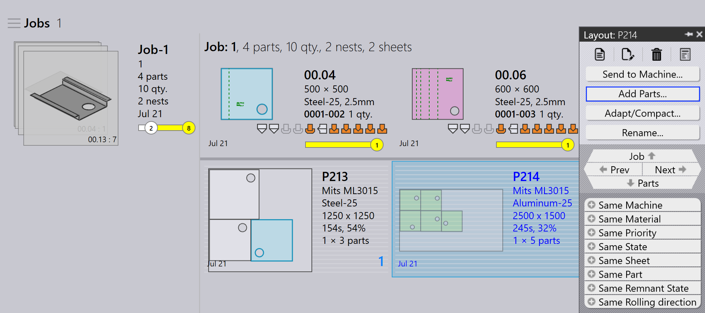
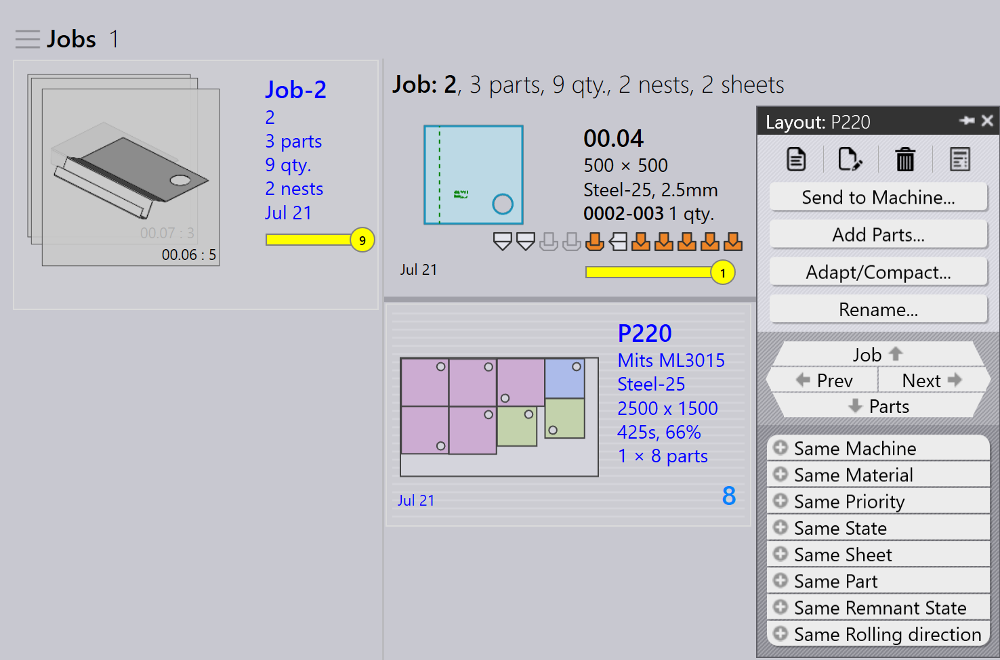

Elrendezéspanel
Ez a szakasz az elrendezéssel kapcsolatos műveleteket magyarázza, mint például Küldés a gépek…, Visszahívás a gépből…, Kimenetek exportálása, Jelölje a teljes…, Alkatrészek hozzáadása…, Alkalmazás/kompakt…, Elrendezések szétválasztása… és egyéb opciók, amelyek az elrendezéspéldányok kezelésére szolgálnak.

|
|


Küldés a gépek…
-
Amikor egy fészek készen áll (megtelt vagy sürgősen szükséges), elküldheti a gépre.
-
Kattintson jobb gombbal a fészekre és válassza a Küldés a gépek… opciót.
-
Automatikusan létrejön egy mappa, amely a fészekről van elnevezve.
-
A kimeneti fájlok (fxlyt, NC, jelentés, csv) exportálásra kerülnek a MUNKA kimenet helyére.
-
A gépre küldött fészkek kék pipajellel vannak megjelenítve.

| A felszabadítás után ezek a fészkek már nem kerülnek újrapróbálásra újracsomagoláshoz. |
Visszahívás a gépből…
-
Ha a kimenet érvényesítésre vagy frissítésre szorul (például további alkatrészek hozzáadása):
-
Kattintson jobb gombbal az exportált elrendezésre.
-
Válassza a Visszahívás a gépből… opciót.
-
-
A kimeneti fájlok és a mappa (fxlyt, NC, jelentés, csv) törlésre kerülnek.
-
A fészek újra szerkeszthetővé válik.
-
Módosításokat végezhet és újra elküldheti a gépre.

Kimenetek exportálása
-
Kattintson jobb gombbal bármely, a gépre küldött elrendezésre (fészek) és kattintson az Kimenetek exportálása opcióra.

-
Az Export Outputs opció exportálja az NC, Jelentés és Elrendezés fájlokat a megfelelő gépi kimenet mappákba.
-
Ez az opció újragenerálja az NC fájlt az aktuális egységbeállításokkal az elrendezéshez.
| Az Export Outputs nem érhető el a Befejezett elrendezésekhez és az újracsomagolásra várási sorban lévő elrendezésekhez. |
Befejezettnek jelölés
-
Miután a fészek feldolgozásra került a gépen, kattintson jobb gombbal a fészekre és válassza a Jelölje a teljes… opciót.
-
Egyszerre több fészket is kiválaszthat és jelölhet befejezettnek.
-
Amikor egy fészek befejezettnek van jelölve:
-
Kiszürkül, a lista végére kerül és zöld pipajellel jelenik meg.
-
Az elrendezés eltávolításra kerül az aktív elrendezések listájáról.
-
Az alkatrész és munka állapotok frissülnek, és a feldolgozott mennyiségek átkerülnek a befejezett állapotba.
-
Az elrendezés kimeneti fájljai eltávolításra kerülnek a gépi kimenet helyéről a duplikált használat elkerülése érdekében.

-
Alkatrészek hozzáadása…

-
Használja ezt az opciót további alkatrészek hozzáadásához egy viszonylag rosszul csomagolt elrendezéshez. Az interaktív fészkeléshez hasonlóan ez egy varázsló-vezérelt opció és használható egyetlen vagy több elrendezésen egyszerre.
-
A TruSmartCAM az Elrendezés újracsomagolási varázslót a fő munkaterületre csatolja, amikor ezt az opciót használja. Tartsa lenyomva a Ctrl billentyűt és válasszon ki egy vagy több alkatrészt az elrendezésre/elrendezésekre csomagoláshoz és nyomja meg a Következő gombot.

-
A kiválasztott alkatrészek megjelennek a következő lépésben egy szerkeszthető mennyiség oszloppal. Frissítse az alkatrészmennyiségeket szükség szerint az Update Qty mezőben. Kattintson a Következő gombra a fészkelés folytatásához. Vegye figyelembe, hogy a mennyiségek csak növelhetők, nem csökkenthetők.

-
Az összes elrendezés külön-külön fészkelt, és a fészkelt eredmények megjelennek az újonnan csomagolt alkatrészekkel elhelyezve. Az elrendezés kiválasztása megjeleníti az összes meglévő elrendezés alkatrészt. Az eredmény automatikusan elvetésre kerül, ha nincs új alkatrész elhelyezve az újracsomagolás során. Egy több másolattal rendelkező elrendezés különböző mintázatokat eredményezhet az újracsomagolás után.

Alkalmazás/kompakt…
-
Ez a varázsló-alapú parancs használható egy elrendezés adaptálásához egy gépről egy másikra, amikor az eredeti gép leállt vagy amikor a gép munkaterhelését ki kell egyensúlyozni.

-
Használható, amikor a tervezett lemez kifogyott a készletből és az elrendezést újra kell tervezni egy másik elérhető lemezre.
-
Összevonhat kisebb lemezekre csomagolt elrendezéseket nagyobb lemezekre az anyag hatékonyabb felhasználása érdekében.
-
Feloszthat nagyobb lemezekre csomagolt elrendezéseket kisebb lemezekre, ha nagy lemez készletek nem állnak rendelkezésre.
-
Javíthatja több elrendezés (akár különböző gépekről is) csomagolási hatékonyságát azok összevonásával.
-
A használatához válasszon ki egy vagy több elrendezést és kattintson a Alkalmazás/kompakt… gombra a varázsló megnyitásához a munkaterületen.

-
A bal oldali panel az összes kiválasztott elrendezést mutatja és az Alkatrészek panel az elrendezés alkatrészeit mutatja.

-
Válassza ki a célgépet és lemezanyagot, majd kattintson a Következő gombra az újrafészkelés végrehajtásához.
-
Az új fészek eredmények megjelennek az eredmény panelen.

-
Kattintson a Következő gombra az adaptált vagy tömörített elrendezés mentéséhez.

Elrendezés felosztása
A Elrendezések szétválasztása… opció lehetővé teszi egy meglévő elrendezés felosztását több elrendezésre a mennyiségek módosításával, a szerszámozás vagy fészkelés újbóli elvégzésének szükségessége nélkül.
Ez a funkció különösen hasznos a következő helyzetekben:
-
Amikor a teljes mennyiség egy részét azonnal elő kell állítani, miközben a fennmaradó mennyiséget későbbi gyártásra ütemezi.
-
Amikor a termelési követelményeket több műszakra vagy napra kell elosztani a munkafolyamat és az erőforrás-felhasználás optimalizálása érdekében.
-
Amikor egy adott gép ideiglenesen nem érhető el vagy foglalt, és módosítani kell az elrendezést az aktuális termelési korlátok figyelembevételéhez.
Egy elrendezés felosztásához végezze el a következő lépéseket:
-
Az Elrendezések nézetben válassza ki a szükséges elrendezést.

-
Kattintson a Elrendezések szétválasztása… gombra.

-
Adja meg a szükséges értéket a Új másolatok mezőben.

-
Kattintson az OK gombra.

A kiválasztott elrendezés most két elrendezésre van felosztva beállított mennyiségekkel.